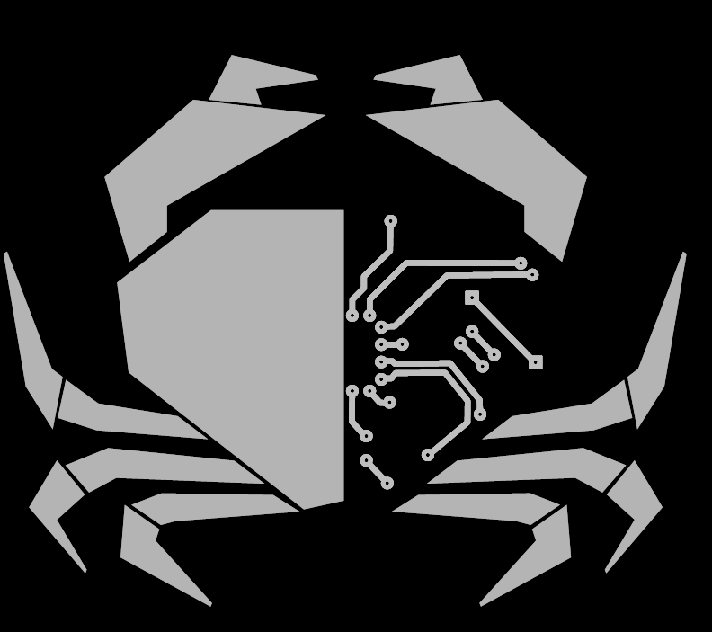

Hexapod Server
You can see all node status. A node is a sensor or actuator connected on the robot bus. Actually you can see just motors. You can see in real time motor position, speed, temperature and torque.